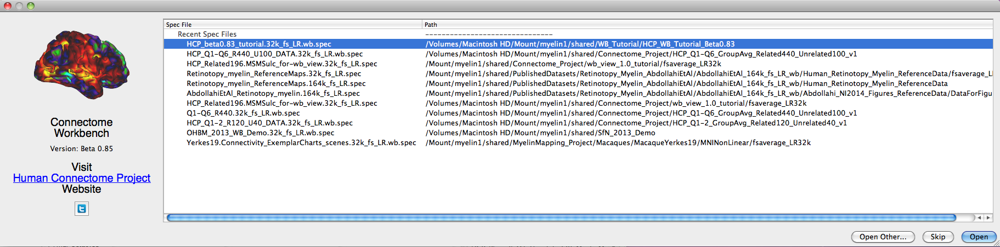

Splash
Screen
The Splash Screen opens by default upon launching wb_view and
contains:
- Workbench version information
- Shortcut list for opening Specification
files (spec files) in the current directory or
those that have been recently opened
To select and open a
Spec file listed, select its title and click the Open
button, or double click on its title.
To turn off the default opening of the Splash
Screen at startup, turn off this option in Preferences
(File menu or wb_view menu [Mac]).
